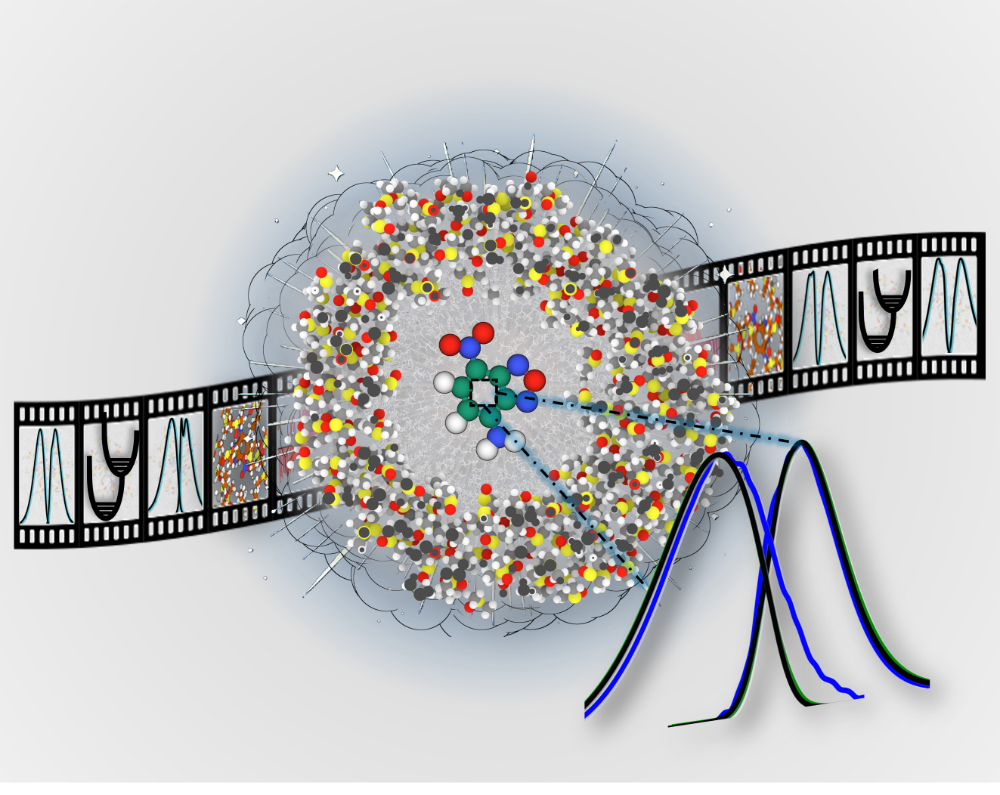
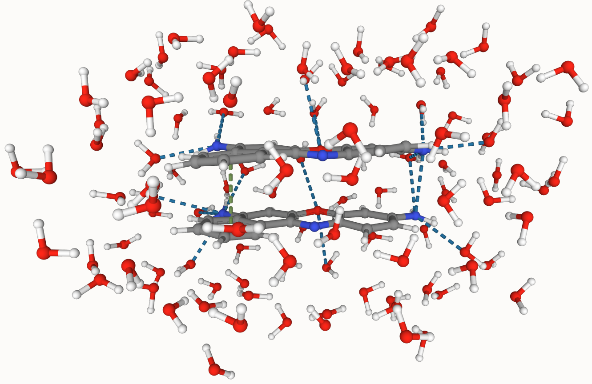
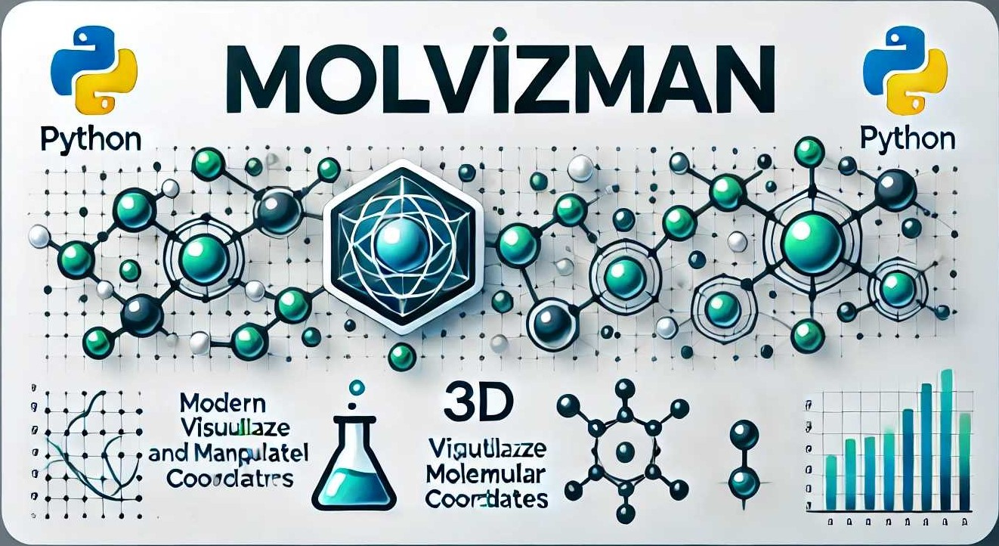
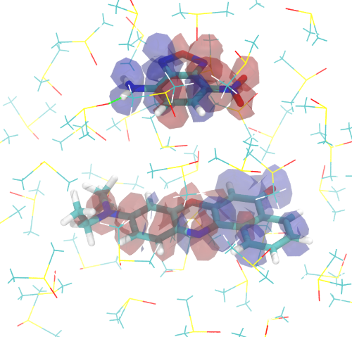

Ajay Khanna
Bridging quantum mechanics and real-world impact through drug discovery, energy transfer, and sustainable technologies
About Me
Ajay Khanna, Ph.D.
Postdoctoral Researcher
Los Alamos National Laboratory
Research Objective
I'm a computational chemist at Los Alamos National Laboratory, specializing in the development and application of quantum mechanical methods and machine learning to solve critical challenges at the intersection of molecular science and real-world applications.
My research bridges fundamental theoretical chemistry with transformative solutions in drug discovery, energy materials, and sustainable technologies. I believe the most impactful computational research emerges at the intersection of rigorous quantum mechanics, efficient algorithms, and practical applications.
Current Research at LANL
Developing deep learning frameworks for non-adiabatic molecular dynamics simulations
Investigating chiroptical spectroscopy in π-stacked molecular aggregates
Designing QSPR models for energy transfer materials
Core Expertise
Education
-
Ph.D., Computational Chemistry — UC Merced, 2024
-
M.Sc., Computational Chemistry — UC Merced
-
M.Sc., Chemistry — NIT Rourkela
-
B.Sc. (Hons.), Chemistry — University of Delhi
Research Focus
Three publication-backed areas where computation meets molecular science
ML Interatomic Potentials
ML-for-Science & HPC
Publication-backed work:
- HIP-NN / hippynn GNN potentials
- Active learning & uncertainty quantification
- GPU/HPC-scale simulations (SLURM, Ray)
- Tool: mlip_benchmark (open source)
Excited-State Dynamics
Nonadiabatic MD & Spectroscopy
Publication-backed work:
- Excitonic coupling & polariton chemistry
- QM/MM absorption & fluorescence spectra
- Circular dichroism & Franck-Condon methods
- Tool: MolSpecPy (open source)
Computational Drug Discovery
CADD & Structure-Based Design
Publication-backed work:
- QM/MM free-energy calculations
- Docking & binding free energy (MOE, AMBER)
- BTK inhibitor design (Frontier Medicines, 2023)
- RDKit, OpenBabel, cheminformatics pipelines
Forward interests: energy storage materials, CO₂ reduction catalysis, and green-energy applications — areas I am actively exploring.
🌟 Featured Publications
1. Covalent Control of Excitonic Interactions in Perylene Diimide Trimers: A Computational Study
Ajay Khanna, Jean-Huber Olivier, Sebastian Fernandez-Albertia, and Sergei Tretiak Nano Letters (2026) Top 10% Novelty
|| Comprehensive study investigating structural disorder effects on electronic and optical properties in π-stacked perylene diimide aggregates, providing insights for organic photovoltaic design.
2. Deconstructing Chirality: Probing Local and Nonlocal Effects in Azobenzene Derivatives with X-ray Circular Dichroism
Ajay Khanna, Victor M. Freixas, Lei Xu, Jérémy R. Rouxel, Niranjan Govind, Marco Garavelli, Shaul Mukamel, and Sergei Tretiak J. Phys. Chem. Lett. 16 (2025) Journal Cover Top 15% Novelty
|| Delivered foundational insights into the structural origins of chiroptical signals, leading to a mechanistic understanding crucial for the rational design of functional molecular machines. Accepted without revision and selected for journal cover.
3. Calculating Absorption and Fluorescence Spectra for Chromophores in Solution with Ensemble Franck-Condon Methods
Ajay Khanna, Sapana V. Shedge, Tim J. Zuehlsdorff, Christine M. Isborn J. Chem. Phys. (2024)Citations: 6 Top 5-25% Novelty
|| Novel computational approach for accurate prediction of absorption and fluorescence spectra in solution, advancing spectroscopic analysis techniques.
4. Molecular Polariton Electroabsorption
Chiao-Yu Cheng, Nina Krainova, Alyssa Brigeman, Ajay Khanna, Sapana Shedge, Christine Isborn, Joel Yuen-Zhou, Noel C. Giebink Nature Comm. (2022) Citations: 27
|| Novel study on molecular polariton electroabsorption, opening new avenues in optoelectronics and quantum technology.
5. Explicit Environmental and Vibronic Effects in Simulations of Linear and Nonlinear Optical Spectroscopy
Sapana V. Shedge, Tim J. Zuehlsdorff, Ajay Khanna, Stacey Conley, Christine M. Isborn J. Chem. Phys. (2021) Citations: 15
|| Comprehensive exploration of environmental and vibronic effects in optical spectroscopy simulations, enhancing accuracy in molecular property predictions.
6. Axial H-Bonding Solvent Controls Inhomogeneous Spectral Broadening, While Peripheral H-Bonding Solvent Controls Vibronic Broadening: Cresyl Violet in Methanol
Christopher A. Myers, Shao-Yu Lu, Sapana Shedge, Arthur Pyuskulyan, Katherine Donahoe, Ajay Khanna, Liang Shi, and Christine M. Isborn The Journal of Physical Chemistry B 2024 Citations: 6
|| Systematic dissection of solvent effects on spectral line shapes, improving simulation accuracy by identifying the critical role of specific molecular interactions.
7. Ligand Driven Electron Counting Rule Selection: A Case Study for Ge5R Complex
Rakesh Parida, G. Naaresh Reddy, Ajay Khanna, Gourisankar Roymahapatra, Santanab Giri Int. J. HIT. TRANSC: ECCN. Vol (2018)
|| Theoretical investigation of ligand-driven electron counting rules in germanium cluster complexes, contributing to understanding of main-group element chemistry.
Projects
mlip_benchmark
Benchmarking suite for ML interatomic potentials — evaluates accuracy, speed, and transferability of GNN-based force fields on standard datasets.
MolSpecPy
Python toolkit for computing absorption and emission spectra of chromophores in solution, interfaced with TeraChem for QM/MM workflows.
hippynn (contributor)
Contributor to LANL's HIP-NN/hippynn framework — a PyTorch-based graph neural network library for machine-learned interatomic potentials at HPC scale.

Computing Absorption and Fluorescence Spectra
Calculating absorption and fluroscence spectra of molecules in explicit environment using ensemble Franck-Condon methods

Automate QM/MM Sims
A Python program designed automate MD trajectories containing dyes in solvents to hybrid QM/MM simulations.

MolVizMan
An interactive Python GUI application allows you to visualize and manipulate molecules from an XYZ file.

Excitonic Coupling
Computing Excitonic Coupling Between Molecules Using Various Excitonic Coupling Schemes
DOI2BibTex
Convert Digital Object Identifiers (DOI) into BibTeX entries with a simple, user-friendly web app built using Streamlit!
Technical Expertise
Tools I use daily and would be comfortable discussing in depth
ML Interatomic Potentials
GNN-based force fields, active learning, and uncertainty quantification at HPC scale
QM/MM & Spectroscopy
Excited-state methods, hybrid QM/MM simulations, and optical spectra calculations
Computational Drug Discovery
Structure-based design, docking, and binding free-energy calculations
Machine Learning for Science
Graph neural networks, property prediction, and ML workflow automation
Programming & HPC
GPU-accelerated computing and large-scale job orchestration on national clusters
Cheminformatics
Molecular representation, similarity search, and structure-activity modeling
Professional Experience
Research and development at the forefront of computational chemistry
Postdoctoral Research Associate
Los Alamos National Laboratory (LANL)
Advisor: Dr. Sergei Tretiak
Key Achievements:
- Developing deep learning-based surrogate models for non-adiabatic molecular dynamics simulations
- Established quantitative structure-property relationships (QSPR) in π-stacked molecular aggregates (perylene diimide, squaraine, and cyanine dyes)
- Generated foundational insights into the structural origins of chiroptical signals in chiral molecular aggregates
- Co-organizer, MLCM-26 — Machine Learning in Chemical & Materials Sciences, Santa Fe, 2026
Research Focus:
Graduate Researcher
University of California, Merced
Computational Chemistry & Physics
Key Achievements:
- Extended ensemble Franck-Condon methods for accurate full stack UV-Vis spectroscopy predictions in solution (J. Chem. Phys. 2024)
- Co-authored Nature Communications publication on molecular polariton electroabsorption (27 citations)
- Developed QM/MM automation tools reducing simulation setup time by 70%
- Contributor to a $7.5M DOD-funded collaborative project on polariton chemistry and cavity quantum electrodynamics (Isborn group, UC Merced)
Research Focus:
Computer-Aided Drug Design (CADD) Intern
Frontier Medicines
Computational Chemistry & Drug Discovery
Key Achievements:
- Developed Python pipelines to automate SMILES-to-desolvation energy calculations and conformational sampling for Bruton's Tyrosine Kinase (BTK) inhibitors, leveraging OpenMM and TeraChem (hybrid QM/MM interface) for significantly streamlined workflows
- Gained proficiency in unbiased and biased ligand-based docking (MOE), successfully deploying these techniques to perform protein-ligand docking for BTK inhibitors
- Built robust Protein-Ligand binding free energy calculation pipelines, utilizing hybrid QM/MM techniques, to enable accurate rank-ordering of Bruton's Tyrosine Kinase (BTK) inhibitors
Technologies:
Teaching & Mentorship
Graduate Mentoring
- • GradEXCEL Program mentor (2019-2022)
- • Supervised undergraduate researchers
- • Graduate Excel Peer Mentor Award
Teaching Development
- • Advanced Pedagogy certification
- • GROW TA Training Fellowship
- • Stanford Writing in Sciences course
Global Research Collaboration
Working with leading researchers and institutions worldwide to advance computational chemistry
My Research Journey
From first publication to cutting-edge postdoctoral research
First Publication
Ligand Driven Electron Counting Rule Selection (NIT Rourkela collaboration)
PublicationPh.D. Started
UC Merced - Computational Chemistry
🏆 Summer Research Fellowship
Summer Research Fellowship
UC Merced (2nd consecutive year)
AwardJ. Chem. Phys. Publication
Explicit Environmental Effects in Optical Spectroscopy
🎤 ACS Conference (Talk & Poster)
🎤 UC Merced Talk
Nature Communications
Molecular Polariton Electroabsorption (27 citations)
🏆 5 Awards & Fellowships:
• Graduate Excel Peer Mentor Award
• Graduate Fellowship Incentive Program
• GROW TA Training Fellowship
• Chemistry Travel Award
🎤 ACS Spring Conference (Talk)
CADD Intern - Frontier Medicines
Virtual screening, QM/MM, and drug design
🏆 Outstanding Graduate Student Award (UC
Merced)
💰 XSEDE/ACCESS HPC Grant ($5,263)
8000 GPU-hours + 3000 CPU-hours
Ph.D. Completed
UC Merced - Computational Chemistry
📄 2 Publications:
• J. Chem. Phys. (Franck-Condon Methods - 6 citations)
• J. Phys. Chem. B (Spectral Broadening - 6 citations)
🎤 WCTC Conference (Poster)
Postdoc - Los Alamos National Laboratory
Deep Learning for Non-Adiabatic MD & Chiroptical Spectroscopy
📄 2 Publications (2025):
• J. Phys. Chem. Lett. (Journal Cover + Top 15% Novelty)
• J. Phys. Chem. C. (Under Review)
🎤 ESP 2025 Conference (Poster)
Professional Certifications
Continuous learning and specialization in cutting-edge computational methods
Introduction to Cheminformatics and Medicinal Chemistry
Udemy
2024
Comprehensive training in computational methods for molecular representation, drug-target interactions, and structure-based drug design
Data Science with Python
Simplilearn
2022
Expertise in data analysis, visualization, and machine learning using Python ecosystem (NumPy, Pandas, Scikit-learn)
Fundamental of Accelerated Computing with CUDA Python
NVIDIA
2023
GPU-accelerated computing and parallel programming for high-performance scientific simulations
Tutorials
Running Classical MD Sims
Getting started with running classical molecular dynamics simulations using Amber24
Running AIMD Simulations
How to run ab initio molecular dynamics (AIMD) simulations in gas, implicit and explicit Enviroments
Everything TeraChem
TeraChem for electronic structure calculations: Gas, implicit and explicit environments
Everything Gaussian
Gaussian16 for electronic structure calculations: Gas, implicit and explicit environments
More Tutorials
Click For More Tutorials on different types of MD and AIMD sims. Electronic structure, data analysis, quality images etc
CV
My full CV is available on request. Please reach out via the contact form and I'll be glad to share it.
Request CVContact Me
The fastest way to reach me is this short form. I read every submission and typically reply within a few days.
Get in Touch